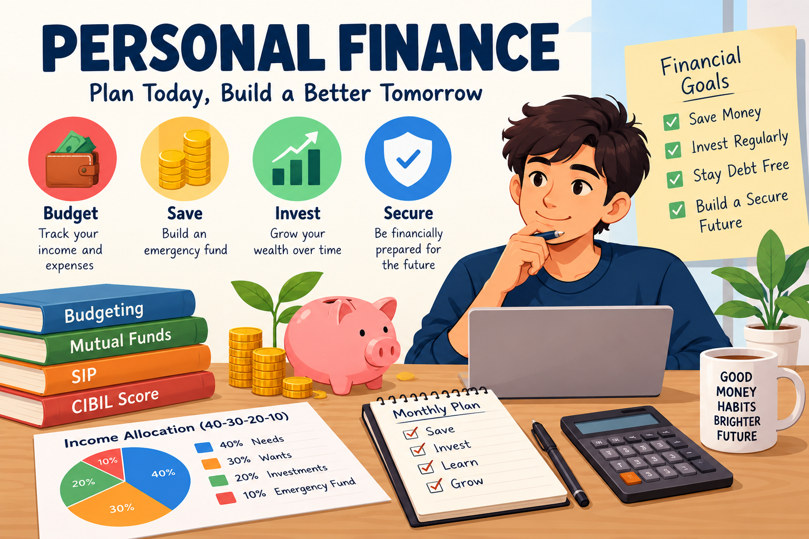
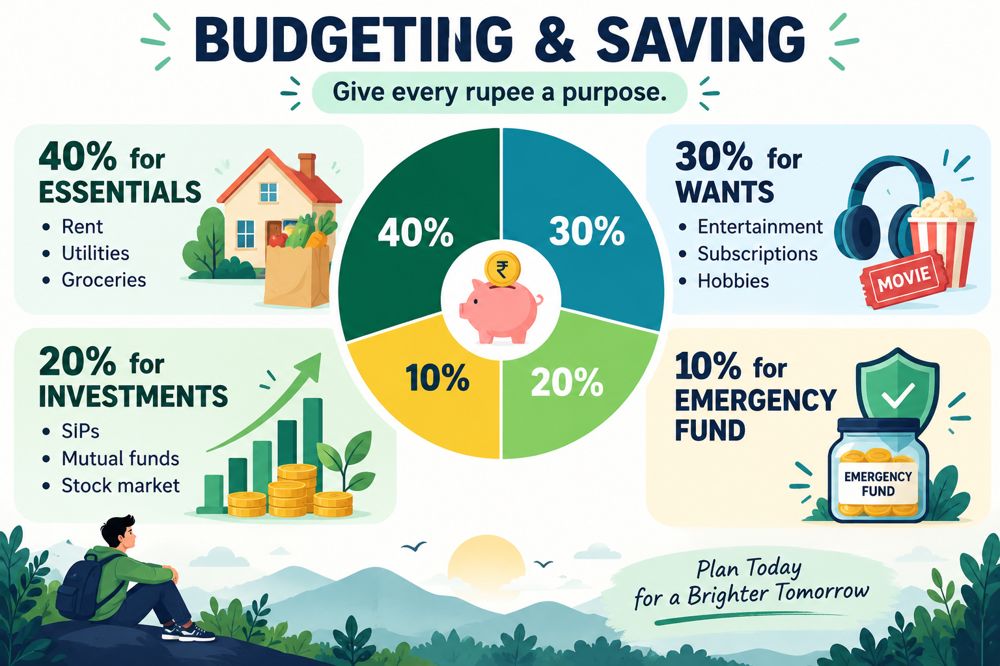

Introdction !!
Personal Finance is one of the the skill ,Everyone should learn . It is about managing ,investing and saving money. It becomes Very important for those , who want to achieve Everything at their own , because money management is the one of the skill that can play crucial role in their future lifestyle. We will cover some of basic money management tips and some introduction to investing.

Why it is Important ??
Money Loses its value Every year , because of inflation. So if we keep at one place and did nothing of it , it can make our loss . So it is very important to utilise the money efficiently.
Budgeting and Saving !!
Budgeting is the core process of tracking income and allocating expenses. We can take an example of how we can divide our Budget into parts and manage it .Suppose we have some income , We can divide it into 40-30-20-10.- 40% for: Essential expenses like rent, utilities and groceries.
- 30% for: Spending like entertainment, subscriptions, and hobbies.
- 20% for: Investment like SIPs , Mutual funds and Stock market.
- 10% for: Emergency Funds.

Investing !!
As we discussed earlier , Money loses its its value . So the best method to keep its value is to invest it in the efficient manner. We can invest money like in long term and short term acc to our prefernce. We can use many ways to invest it like Mutual funds , SIps , FDs , Bonds etc.
- Mutual Funds : It's like a group investment where people give their investment to a company called AMC. Where experts use your money to invest in stocks and bonds .Acc to perfomance of investment , everyone shares profir and loss .
- SIP : It's a way to invest small amount every in period of time. This Money goes into mutual funds automatically. it is the the best way to buid a financial habit. we don't have to think where the money is going and we can withdraw money anytime if some emergency came.
- FD : a fix Deposit is a safe method for investing. We can put some money to invest and after a period of time it gives us money with a fixed interest rate .It is lowest risky and steady .
Here is one more habit we can make to manage our cibil score.
Cibil Score : It's a 3-digit number between 300 to 900. it shows that how good you are to repay money to a borrower. bank checks it before giving you a loan . A higher cibil score means that you can take loan easily.Financial Habits !!
We have to make our financial habits good if we want to go far in life . The habits one can develop is to Track expenses so one can know where the the money is going. Save a small amount monthly . learn how investing works . Avoid taking debts . Pay bills on time and keep tracking credit history . These habits can keep us Financial stress free .
Personal Finance Roadmap Summary
| Financial Pillar | Target Metric | Primary Benefit |
|---|---|---|
| Budgeting | 40/30/20/10 Rule | Stop overspending and enforces savings. |
| Emergency Fund | 3 - 6 Months Expenses | Provides Comfort during Emergency. |
| CIBIL Score | 750+ Score | Quick loan approvals at lower interest rates. |
| Mutual Funds | 10+ Year Time Horizon | Outperforms inflation via market exposure. |
| SIP | Monthly Fixed Auto-Debit | Eliminates the need to time stock market cycles. |
Conclusion !!
Good Financial habits don't start with big money , they start with small , smart decisions. Learning before investing build a strong base . Understanding about mutual funds , SIPs , FDs and cibil score helps you choose wisely. So we have to start early , stay consistant and keep learning. Your future self will thank you for the decisions you make today !!